花の撓/愛知県
花の撓（はなのとう）、という不思議な行事がある。
主に愛知県下で盛んに行われているのだが、詳しいことは追々紹介しよう。
今回、花の撓を見に訪れたのは津島市の津島神社。
全国に信仰圏を持つ津島神社、天王社の総本山である。
…花の撓を見る事が目的だったのでどこでも良かったのだが、それなりに大きい神社の方が立派かな、と思って…
この花の撓、主に4月から5月に行われるのだが、この神社では5月1日から5日まで開催される。

境内の建物はみな巨大かつ立派だ。
拝殿も荘厳。
ちなみにこの拝殿含め後ろに続く回廊、祭文殿、釣殿と全て県の文化財、特に本殿と楼門は桃山期のもので、国の重要文化財になっているとか。
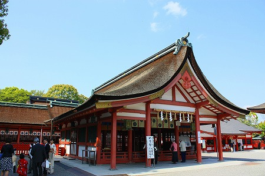
津島神社に恨みはないが、神社本体を見に来たわけではないので軽く参拝だけしておく。
そんな社殿建築銀河系軍団の一画にチョット地味な建物がある。
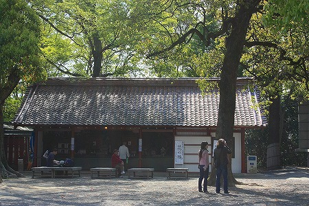
そう、それがまさに花の撓が行われている会場なのだ。
近づいてみよう。
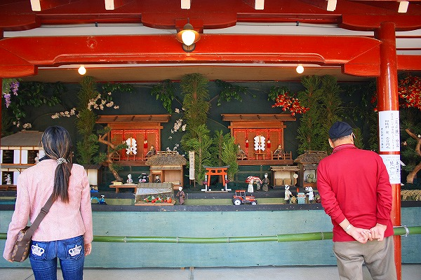
こんな感じ。
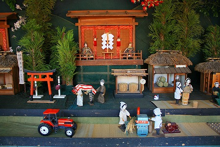
これが花の撓なのである。
これは五穀豊凶神卜祭という神事によって得られた御神託の結果をジオラマ仕立てにして皆さんにお知らせする、という行事なのだ。
一見、ほのぼのテイストあふれる農村風景のジオラマだが、実はありがた〜い御神託のお知らせなのである。
このジオラマに設置された農作物の数などで各作物の作況や気候を読み解くのだとか。
毎年見ている人ならともかく初見の私にはさっぱり判らなかった。
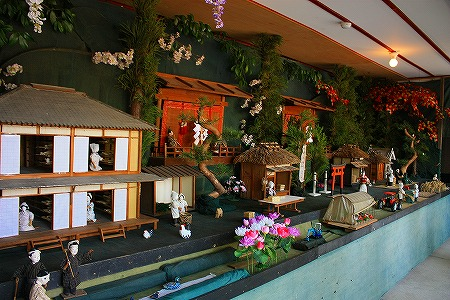
ただし、私以外の方は真剣そのもの。熱い視線を注いでいた。
具体的に見ていこう。まずは左端の部分。
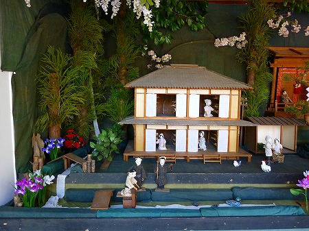
これは養蚕農家と思われる。
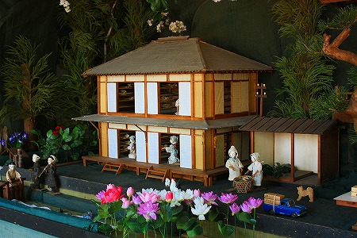
部屋の中では女性が世話をしているようだ。
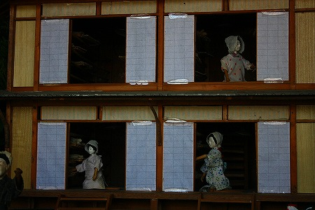
棚に乗っている白いモノが繭玉なのだろうか。ちょっとお餅みたいだが。
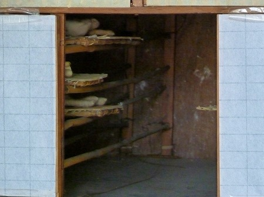
人形は手と顔だけで胴体はないようだ。よく見れば人形の顔の出来は良い。
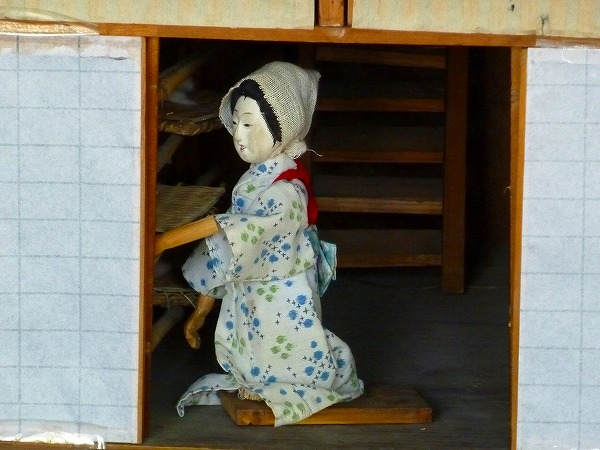
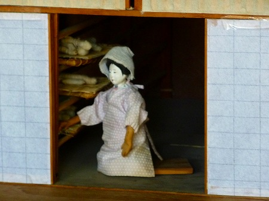
養蚕農家の前では男性が用水の水門を開けている。これもまた水を引く時期を示しているのだろうか。
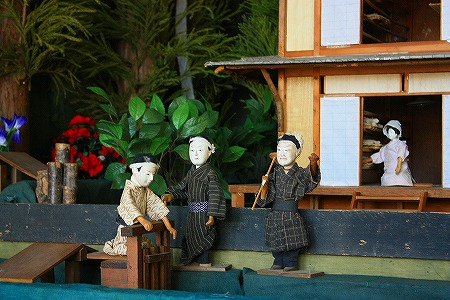
今度は中央部。
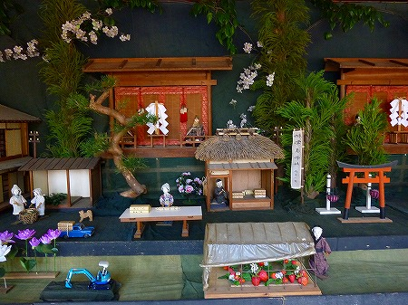
真ん中にはれんこんの出荷風景。
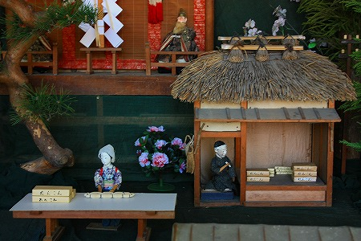
これは当然小屋の中に積まれている蓮根が納められた入れ物の数で作況を判断するのだろう。
伝統的な農村風景に何故か突然ユンボが！
このように伝統的な民俗行事であるのに現代的なエレメントが登場してくるのが面白い。
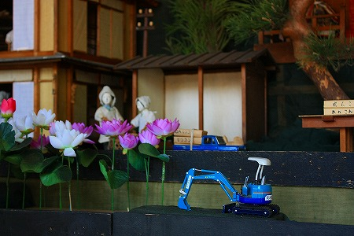
つまりこの行事が単なる懐古趣味で行われているのではなく実効性を伴った行事である事の証なのだ。
イチゴがたくさんあった。今年は豊作ですかね。
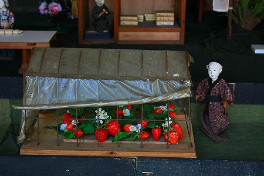
ビニールハウスと着物の人という組み合わせもアンバランスで面白い。人形はかなり古いのかも知れない。
右サイド
ここは主に米関係のジオラマが続く。もっとも重要なパートと見た。
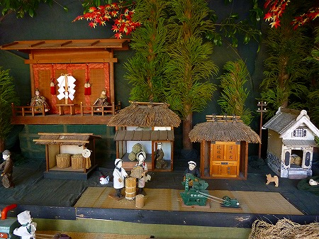
田んぼの半分ほどに稲が実っている。まあまあということなのだろうか。
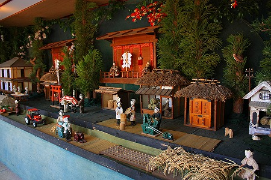
↓こうした農機も登場する。
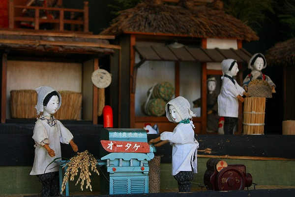
ちなみにオータケとは愛知県にある農機メーカで、その上に書かれている高木農機商会はこの津島神社のすぐ近くにある農機屋さんだ。
見れば右側にはちゃんと発動機まで置いてある。
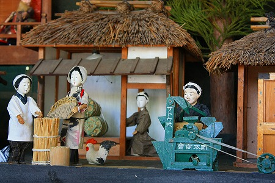
今となってはレトロな農機だが、隣には最新式のトラクターの模型（つかミニカー？）も置かれていた。
戦前と戦後の農作業が同時進行していて面白かった。
蔵の中には米俵が置かれていた。やはりコメの出来は半分、ということなのだろうか？
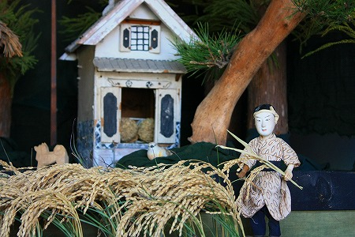
獅子舞もあった。
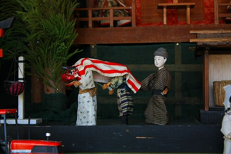
伝統的な農作業風景と現代的な農機が入り乱れたなんとも不思議な光景であった。
しかしそれは都会で生活している人からの視点であって、案外農業を営んでいる人たちにしてみればそんなに違和感のある風景ではないのかもしれない。
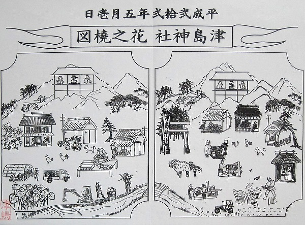
こちらが販売されている絵図。
もちろん毎年図柄は違うはず。
2010.05.